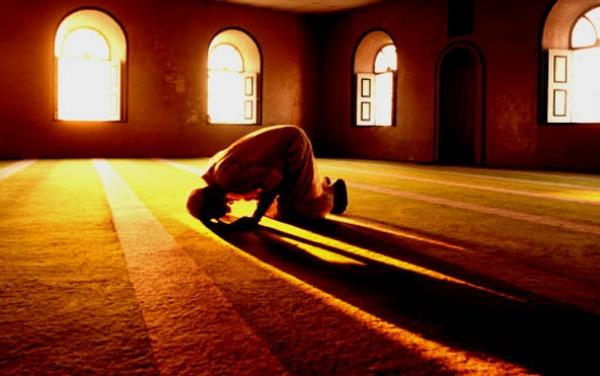

Keutamaan Shalat Lima Waktu
Mengenal keutamaan dan keistimewaan menjaga shalat

KEUTAMAAN SHALAT

1. Shalat adalah Sebaik-baik Amalan Setelah Dua Kalimat Syahadat
Ada hadits muttafaqun 'alaih sebagai berikut,
عَنْ عَبْدِ اللَّهِ بْنِ مَسْعُودٍ قَالَ سَأَلْتُ رَسُولَ اللَّهِ -صلى الله عليه وسلم- أَىُّ الْعَمَلِ أَفْضَلُ قَالَ « الصَّلَاةُ لِوَقْتِهَا ». قَالَ قُلْتُ ثُمَّ أَىٌّ قَالَ « بِرُّ الْوَالِدَيْنِ ». قَالَ قُلْتُ ثُمَّ أَىٌّ قَالَ « الْجِهَادُ فِى سَبِيلِ اللَّهِ ».
Dari ‘Abdullah bin Mas’ud, ia berkata, “Aku pernah bertanya pada Rasulullah shallallahu ‘alaihi wa sallam, amalan apakah yang paling afdhol?” Jawab beliau, “Shalat pada waktunya.” Lalu aku bertanya lagi, “Terus apa?” “Berbakti pada orang tua”, jawab Nabi. “Lalu apa lagi”, aku bertanya kembali. “Jihad di jalan Allah”, jawab beliau.
(HR. Bukhari no. 7534 dan Muslim no. 85)
2. Shalat Lima Waktu Mencuci Dosa
Dari Abu Hurairah radhiyallahu ‘anhu, ia berkata bahwa Rasulullah shallallahu ‘alaihi wa sallam bersabda,
أَرَأَيْتُمْ لَوْ أَنَّ نَهَرًا بِبَابِ أَحَدِكُمْ ، يَغْتَسِلُ فِيهِ كُلَّ يَوْمٍ خَمْسًا ، مَا تَقُولُ ذَلِكَ يُبْقِى مِنْ دَرَنِهِ » . قَالُوا لاَ يُبْقِى مِنْ دَرَنِهِ شَيْئًا . قَالَ « فَذَلِكَ مِثْلُ الصَّلَوَاتِ الْخَمْسِ ، يَمْحُو اللَّهُ بِهَا الْخَطَايَا »
“Tahukah kalian, seandainya ada sebuah sungai di dekat pintu salah seorang di antara kalian, lalu ia mandi dari air sungai itu setiap hari lima kali, apakah akan tersisa kotorannya walau sedikit?” Para sahabat menjawab, “Tidak akan tersisa sedikit pun kotorannya.” Beliau berkata, “Maka begitulah perumpamaan shalat lima waktu, dengannya Allah menghapuskan dosa.”
(HR. Bukhari no. 528 dan Muslim no. 667)
Dari Jabir radhiyallahu ‘anhu,
مَثَلُ الصَّلَوَاتِ الْخَمْسِ كَمَثَلِ نَهَرٍ جَارٍ غَمْرٍ عَلَى بَابِ أَحَدِكُمْ يَغْتَسِلُ مِنْهُ كُلَّ يَوْمٍ خَمْسَ مَرَّاتٍ ». قَالَ قَالَ الْحَسَنُ وَمَا يُبْقِى ذَلِكَ مِنَ الدَّرَنِ
“Permisalan shalat yang lima waktu itu seperti sebuah sungai yang mengalir melimpah di dekat pintu rumah salah seorang di antara kalian. Ia mandi dari air sungai itu setiap hari lima kali.” Al Hasan berkata, “Tentu tidak tersisa kotoran sedikit pun (di badannya).”
(HR. Muslim no. 668)
Dua hadits di atas menerangkan tentang keutamaan shalat lima waktu di mana dari shalat tersebut bisa diraih pengampunan dosa. Namun hal itu dengan syarat, shalat tersebut dikerjakan dengan sempurna memenuhi syarat, rukun, dan aturan-aturannya. Dari shalat tersebut bisa menghapuskan dosa kecil -menurut jumhur ulama-, sedangkan dosa besar mesti dengan taubat. Lihat Nuzhatul Muttaqin Syarh Riyadhis Sholihin karya Syaikh Musthofa Al Bugho dkk, hal. 409.
3. Shalat Lima Waktu Menghapuskan Dosa
Dari Abu Hurairah, Rasulullah shallallahu ‘alaihi wa sallam bersabda,
الصَّلَوَاتُ الْخَمْسُ وَالْجُمُعَةُ إِلَى الْجُمُعَةِ وَرَمَضَانُ إِلَى رَمَضَانَ مُكَفِّرَاتٌ مَا بَيْنَهُنَّ إِذَا اجْتَنَبَ الْكَبَائِرَ
“Di antara shalat yang lima waktu, di antara Jumat yang satu dan Jumat lainnya, di antara Ramadhan yang satu dan Ramadhan lainnya, itu akan menghapuskan dosa di antara keduanya selama seseorang menjauhi dosa-dosa besar.”
(HR. Muslim no. 233)
4. Shalat adalah Cahaya di Dunia dan Akhirat
Dari ‘Abdullah bin ‘Amr, Nabi shallallahu ‘alaihi wa sallam bersabda,
مَنْ حَافَظَ عَلَيْهَا كَانَتْ لَهُ نُوراً وَبُرْهَاناً وَنَجَاةً يَوْمَ الْقِيَامَةِ وَمَنْ لَمْ يُحَافِظْ عَلَيْهَا لَمْ يَكُنْ لَهُ نُورٌ وَلاَ بُرْهَانٌ وَلاَ نَجَاةٌ وَكَانَ يَوْمَ الْقِيَامَةِ مَعَ قَارُونَ وَفِرْعَوْنَ وَهَامَانَ وَأُبَىِّ بْنِ خَلَفٍ
“Siapa yang menjaga shalat lima waktu, baginya cahaya, bukti dan keselamatan pada hari kiamat. Siapa yang tidak menjaganya, maka ia tidak mendapatkan cahaya, bukti, dan juga tidak mendapat keselamatan. Pada hari kiamat, ia akan bersama Qorun, Fir’aun, Haman, dan Ubay bin Kholaf.”
(HR. Ahmad 2: 169. Syaikh Syu’aib Al Arnauth mengatakan bahwa sanad hadits ini hasan)
Disebutkan dalam hadits Abu Malik Al Asy’ari, Nabi shallallahu ‘alaihi wa sallam bersabda,
وَالصَّلاَةُ نُورٌ
“Shalat adalah cahaya.”
(HR. Muslim no. 223)
Juga terdapat hadits dari Burairah, Nabi shallallahu ‘alaihi wa sallam bersabda,
بَشِّرِ الْمَشَّائِينَ فِى الظُّلَمِ إِلَى الْمَسَاجِدِ بِالنُّورِ التَّامِّ يَوْمَ الْقِيَامَةِ
“Berilah kabar gembira bagi orang yang berjalan ke masjid dalam keadaan gelap bahwasanya kelak ia akan mendapatkan cahaya sempurna pada hari kiamat.”
(HR. Abu Daud no. 561 dan Tirmidzi no. 223. Al Hafizh Abu Thohir mengatakan bahwa hadits ini shahih)
Semoga bermanfaat. Hanya Allah yang memberi taufik.
Insya Allah bersambung.